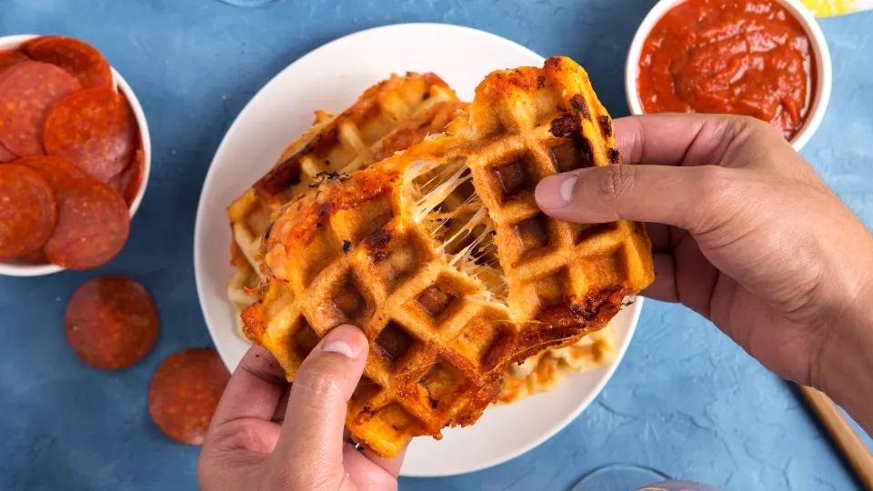

Waffled Pizza Dippers

This is a new take on a melt! Great for parties, these make for a tasty snack.
Ingredients:
- 1 3/4 cups shredded mozzarella cheese
- 1/4 cup shredded parmesan cheese
- 1/2 teaspoon dried basil leaves
- 1/2 teaspoon dried oregano leaves
- 2 8oz cans refrigerated crescent dinner rolls
- 1 14 oz jar pizza sauce
- 32 small pepperoni slices
Instructions:
- Heat waffle maker with 8-inch-square cooking surface on Medium-High heat setting.
- In medium bowl, mix both cheeses, basil and oregano; set aside.
- In 1 1/2-quart saucepan, heat pizza sauce over low heat, stirring occasionally, until hot. Place in small serving bowl.
- Unroll both cans of dough onto work surface. Separate each crosswise, making four (7-by-6-inch) rectangles; firmly press perforations to seal.
- Place 1 dough rectangle on bottom surface of heated waffle maker, being careful not to open up perforations. Quickly sprinkle 1 cup cheese mixture evenly on top of dough. Place half the slices of pepperoni evenly over cheese mixture. Top with another dough rectangle; close waffle maker. Bake 2 to 3 minutes or until sandwich is golden brown.
- With pancake turner, remove from waffle maker; place on cutting board. Cool 30 seconds before cutting.
- Repeat with remaining dough, cheese mixture and pepperoni.
- Serve warm with pizza sauce for dipping, and enjoy!